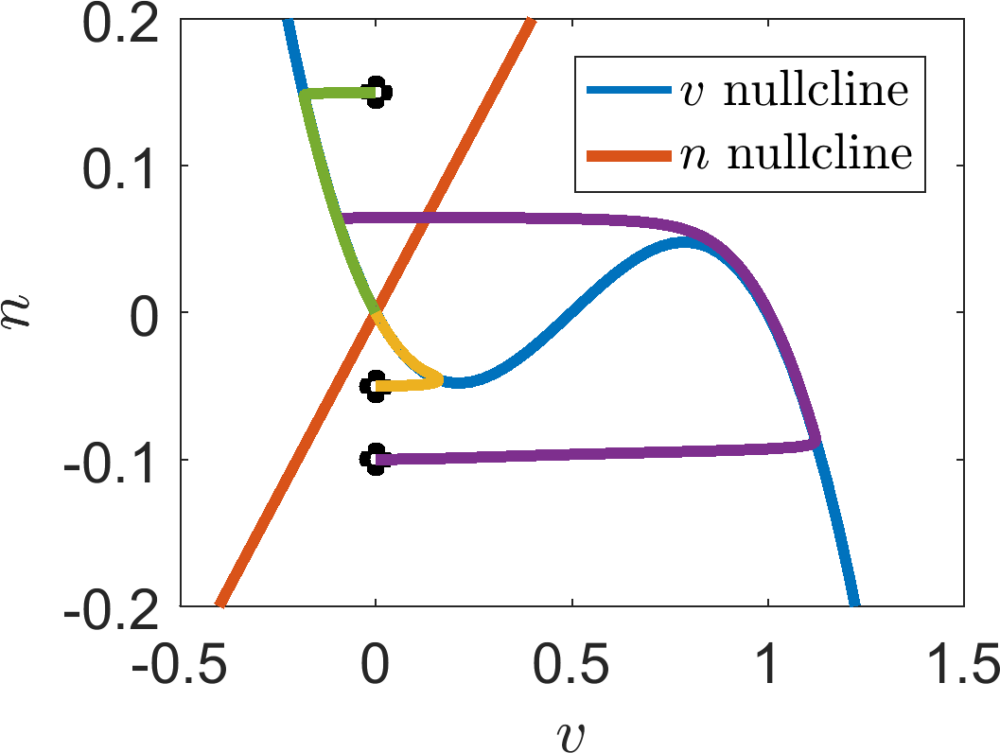

1. Squirrels
Squirrels do not like each other.
Grey, \(G\), and red, \(R\), squirrel populations undergo the following interactions:
Grey squirrels are born at a rate proportional to their population, where the proportionality constant is \(b_1\).
Red squirrels are born at a rate proportional to their population, where the proportionality constant is \(b_2\).
Both squirrel populations compete internally with members of their own population (i.e. grey compete with grey and red compete with red, respectively). Namely, whenever two members of the same population interact one of the members is suppressed. The constant of proportionality is \(d_1\) for the grey squirrels and \(d_2\) for the red squirrels.
The squirrels also compete across species. Namely, a grey and a red squirrel interaction can lead to a reduction in red squirrels, or a reduction in grey squirrels. The rate of proportionality for the reduction of grey squirrels is \(c_1\), whilst the rate of proportionality for the reduction of red squirrels is \(c_2\).
Write down the interaction equations specified by the above description.
Hint: You should create six equations overall and they should be symmetric in \(G\) and \(R\) (i.e. if you swap \(G\) and \(R\) the dynamics should be the same).
Show that the interaction equations lead to the following ODEs
\[\begin{align} \dot{G}&=b_1G-d_1G^2-c_1RG,\tag{1}\\ \dot{R}&=b_2R-d_2R^2-c_2RG. \tag{2} \end{align}\]
What are the dimensions of \(b_1\), \(b_2\), \(d_1\), \(d_2\), \(c_1\) and \(c_2\) in terms of density and time?
Non-dimensionalise the system to produce the following equations
\[\begin{align} \frac{\text{ d}u}{\text{ d}\tau}=&u(1-u-\alpha_{12}v),\tag{3}\\ \frac{\text{ d}v}{\text{ d}\tau}=&\rho v(1-v-\alpha_{21}u). \tag{4} \end{align}\]
Specify the population scales and the time scales and show that the scales have the appropriate dimensions.
What are the parameter groupings \(\rho\), \(\alpha_{12}\) and \(\alpha_{21}\) in terms of \(b_1\), \(b_2\), \(d_1\), \(d_2\), \(c_1\) and \(c_2\)? Show that \(\rho\), \(\alpha_{12}\) and \(\alpha_{21}\) are dimensionless.
Find all steady states of the system, noting any parameter dependencies that need to be satisfied for the steady state to exist.
Calculate the stability of the trivial steady states. Namely, those in which one of the populations is zero, noting parameter dependencies of the stability criterion.
Calculating the stability of the fourth steady state,
\[(u_s,v_s)=\frac{1}{1-\alpha_{12}\alpha_{21}}(1-\alpha_{12},1-\alpha_{21}), \tag{5}\]
leads to a complicated eigenvalue calculation and we will use curve sketching in the next question to consider the stability of this steady state.
Hint: you should find there are four cases:
\(\alpha_{12}<1\) and \(\alpha_{21}<1\);
\(\alpha_{12}<1\) and \(\alpha_{21}>1\);
\(\alpha_{12}>1\) and \(\alpha_{21}<1\);
\(\alpha_{12}>1\) and \(\alpha_{21}>1\).
Sketch the \((u,v)\) phase plane in each of the cases (a)-(d). You should include: the nullclines; annotations regarding the signs of \(\text{ d}u/\text{ d}\tau\) and \(\text{ d}v/\text{ d}\tau\) in each region delineated by the nullclines; accompanying directional arrows in each region; directional arrows on the nullclines; and, finally, trajectories illustrating the expected evolution with initial conditions taken from each region.
Use these sketches to determine the stability of \((u_s,v_s)\), when it exists.
Describe what happens to the grey and red squirrels in each of the cases (a)-(d).
2. Fitzhugh-Nagumo
In 1952 Alan Hodgkin and Andrew Huxley developed the first quantitative model of the propagation of an electrical signal along a squid giant axon. They received the 1963 Nobel Prize in Physiology or Medicine for this work. Fitzhugh and Nagumo simplified this work and showed how the essentials of the excitable process could be distilled into a simpler model, which is analytically tractable.
Let \(v\) be the membrane voltage potential (note this can go negative) and let \(n\) be the cellular recovery variable. The non-dimensional equations controlling voltage spikes in a nerve are given by
\[\begin{align} \epsilon \dot{v}&=v(0.5-v)(v-1)-n,\tag{6}\\ \dot{n}&=v-\gamma n, \tag{7} \end{align}\]
where \(\gamma\) and \(\epsilon\) are positive.
Derive the steady states noting any parameter restrictions.
Assume \(\gamma<16\), characterise the stability of any steady states that exist.
Draw, with as much detail as possible, the \((v,n)\) phase diagrams in the \(\gamma<16\) case.
3. Computer simulation
Simulate equations (6) and (7) with parameters \(\gamma=2\) and \(\epsilon=0.001\). Specifically, plot the trajectories in the \((v,n)\) space along with the nullclines. Further, initialise the trajectories near the \((0,0)\) steady state but with negative \(v\) initially. Hint: for this simulation you will have to use a ‘stiff’ solver. MATLAB’s standard solver is ode23s.
What happens to the trajectories (see Figure 2)?
Why is this weird?
What happens when you increase \(\gamma\)?
Suppose we have a trajectory that starts at the origin and we increase \(\gamma\) past 16 and then lower it again. Could this model exhibit hysteresis?

Simulation of equations (6) and (7) with parameters \(\gamma=2\) and \(\epsilon=0.001\).
Exam revision
4. Damped pendulum
The equation of a damped pendulum is
\[\ddot{\theta}+\underbrace{\eta \dot{\theta}}_{\textrm{Energy loss due to air resistance}}+k\sin(\theta)=0, \tag{8}\]
where \(k\) and \(\eta\) are positive constants.
Write the second-order differential equation (8) as two first-order ODEs.
Identify the steady states of your two-variable system, noting any parameter dependencies.
Characterise the stability of the steady states, noting any parameter dependencies.
Draw the phase diagram of the system in the \((\theta,\dot{\theta})\) plane. Include nullclines, trajectory directions, stability information of the steady states and draw a number of trajectories to illustrate potential dynamics.
5. Similar systems
Consider the two following systems:
\[\begin{align} \dot{u}_1&=u_2,\tag{9}\\ \dot{u}_2&=-u_1, \tag{10} \end{align}\]
and
\[\begin{align} \dot{v}_1&=v_1v_2,\tag{11}\\ \dot{v}_2&=-v_1^2. \tag{12} \end{align}\]
Show that the quantities \(u_1^2+u_2^2\) and \(v_1^2+v_2^2\) are conserved across their respective systems. What does this mean?
Illustrate the differences between the two systems by calculating the steady states, characterising their stability and drawing the phase planes with as much information as possible.